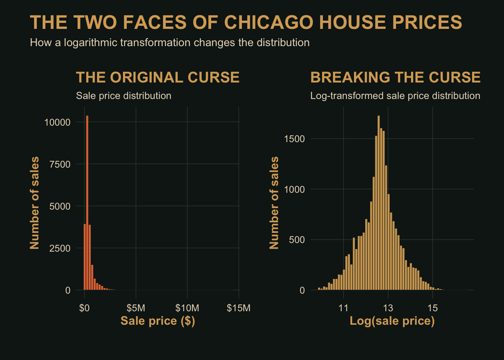
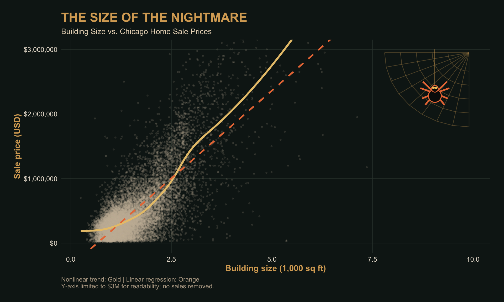
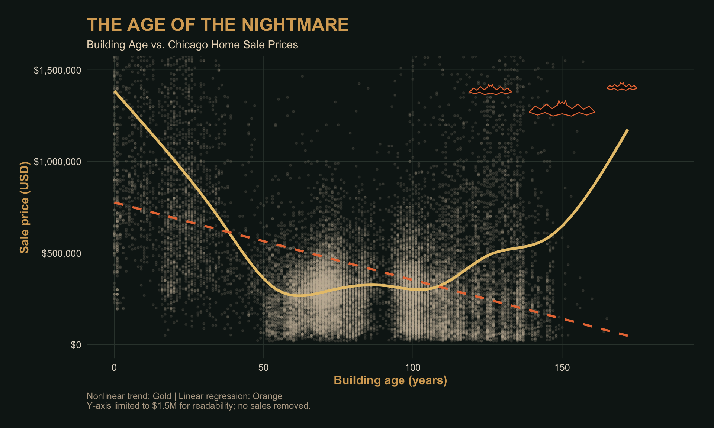
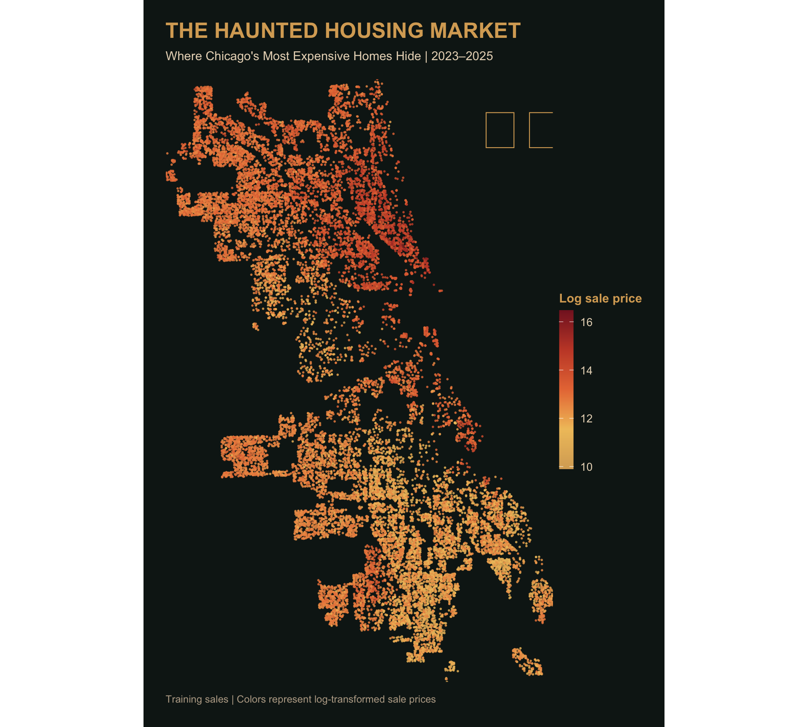
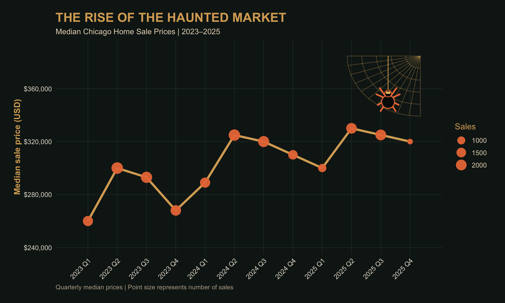
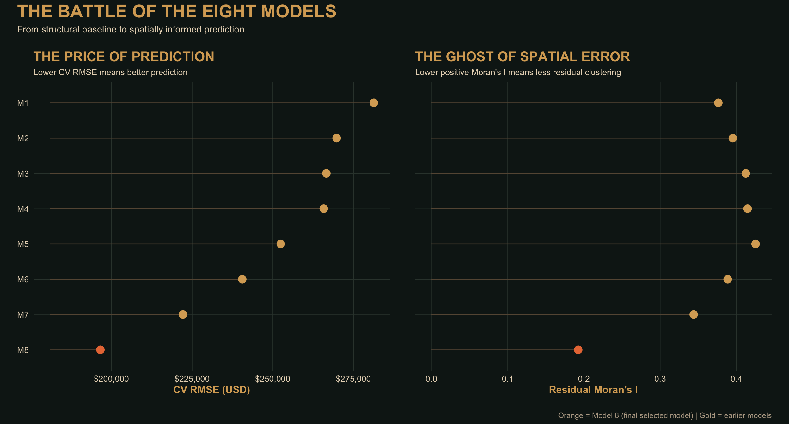
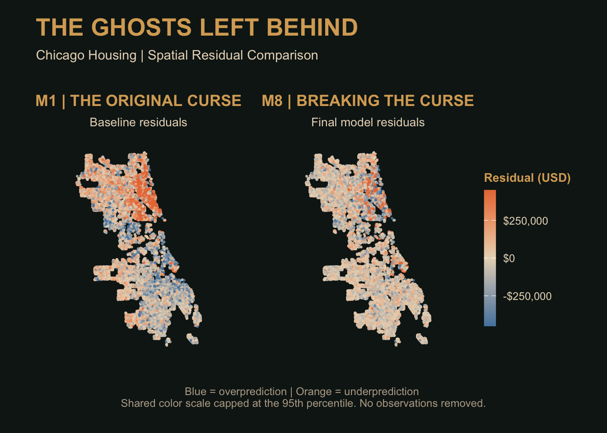
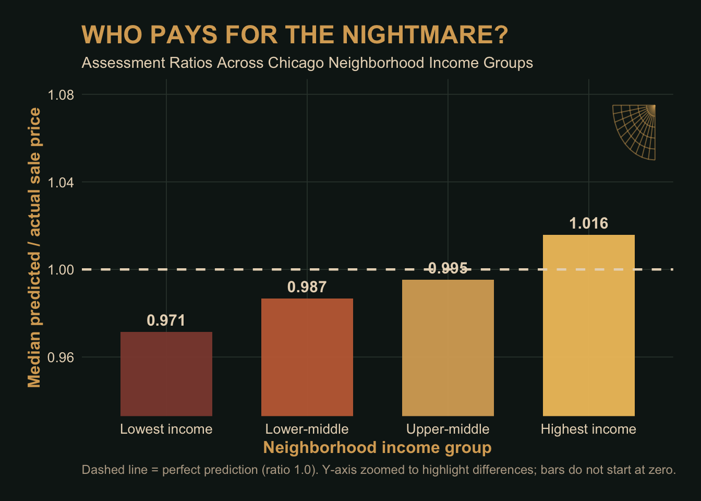

Reveal the Code
library(tidyverse)
library(tidycensus)
library(sf)
library(caret)
library(spdep)
library(nngeo)
library(patchwork)
options(scipen = 999)
MUSA 5080 | PUBLIC POLICY ANALYTICS
Chicago House Price Prediction — Team Research Report
Welcome to A Nightmare in Regression Class.
This report explores Chicago housing prices through regression modeling, spatial feature engineering, and predictive evaluation.
These helpers are to help you get off the ground.
library(tidyverse)
library(tidycensus)
library(sf)
library(caret)
library(spdep)
library(nngeo)
library(patchwork)
options(scipen = 999)check_na <- function(formula, df) {
vars <- all.vars(formula)
bad <- vars[sapply(vars, function(v) any(is.na(df[[v]])))]
if (length(bad) > 0) {
stop("These variables have NAs: ", paste(bad, collapse = ", "),
". Fill them or choose another variable (Rule 1).")
}
}
# 10-fold CV RMSE, same folds every time
cv_rmse <- function(formula, data) {
df <- if (inherits(data, "sf")) st_drop_geometry(data) else data
check_na(formula, df)
set.seed(5080)
fit <- train(formula, data = df, method = "lm",
trControl = trainControl(method = "cv", number = 10))
fit$results$RMSE
}
# Each house's prediction from the fold where it was held out
cv_pred <- function(formula, data) {
df <- if (inherits(data, "sf")) st_drop_geometry(data) else data
check_na(formula, df)
set.seed(5080)
fit <- train(formula, data = df, method = "lm",
trControl = trainControl(method = "cv", number = 10,
savePredictions = "final"))
fit$pred %>% arrange(rowIndex) %>% pull(pred)
}
# Chicago Data Portal (Socrata) -> sf. `where` is a SoQL filter.
socrata_get <- function(dataset, where, select = NULL, limit = 200000) {
where <- str_squish(where)
q <- paste0("$where=", URLencode(where, reserved = TRUE), "&$limit=", limit)
if (!is.null(select)) q <- paste0(q, "&$select=", URLencode(str_squish(select), reserved = TRUE))
url <- paste0("https://data.cityofchicago.org/resource/", dataset, ".geojson?", q)
tmp <- tempfile(fileext = ".geojson")
resp <- tryCatch(download.file(url, tmp, quiet = TRUE), error = function(e) e)
if (inherits(resp, "error")) stop("Portal request failed. Open this URL in a browser to see why:\n", url)
st_read(tmp, quiet = TRUE)
}Build every feature on all_sales, so training and test houses get identical features. Split off train again whenever you add something.
all_sales <- bind_rows(
read_csv("data/chicago_train.csv", show_col_types = FALSE) %>% mutate(split = "train"),
read_csv("data/chicago_test.csv", show_col_types = FALSE) %>% mutate(split = "test")
) %>%
st_as_sf(coords = c("lon", "lat"), crs = 4326) %>%
st_transform(3435) # Illinois East State Plane, feet
all_sales %>% st_drop_geometry() %>% count(split)# A tibble: 2 × 2
split n
<chr> <int>
1 test 5789
2 train 23200Useful sources: the Chicago Data Portal (find a dataset’s ID under its API button), the Census via tidycensus, and Cook County’s open data.
Decide which training sales are market sales. Record each rule, why, and how many it removed. Then explore: at least four plots, including a map of price.
We only remove training rows. Every test house is kept and predicted (Rule 1). First we look at how many sales fall in each price band.
train_raw <- all_sales %>% filter(split == "train")
train_raw %>%
st_drop_geometry() %>%
count(price_band = cut(sale_price, c(-Inf, 20000, 50000, 100000, Inf),
labels = c("< $20k", "$20k–50k", "$50k–100k", "$100k+")),
is_multisale)# A tibble: 8 × 3
price_band is_multisale n
<fct> <dbl> <int>
1 < $20k 0 82
2 < $20k 1 1
3 $20k–50k 0 578
4 $20k–50k 1 33
5 $50k–100k 0 1853
6 $50k–100k 1 101
7 $100k+ 0 19455
8 $100k+ 1 1097The lowest training price is $10,373, so the file already excludes sales under $10,000 (the threshold we used for Philadelphia in class). We add two rules:
| # | Rule | Why | Removed |
|---|---|---|---|
| 1 | Drop is_multisale == 1 |
The sale covered more than one parcel, so the price does not describe this one house. Only 196 of these 1,232 sales share a location with another training sale, so the flag marks multi-parcel deals, not houses that sold twice. | 1,232 |
| 2 | Drop sale_price < $20,000 |
No single-family house in Chicago sells this cheaply in an arm’s-length deal. These are likely family transfers, tax or sheriff sales. | 59 |
train_raw <- train_raw %>%
mutate(drop_reason = case_when(
is_multisale == 1 ~ "1. Multi-parcel sale",
sale_price < 20000 ~ "2. Price under $20,000",
TRUE ~ "Kept"
))
# Cleaning log: how many rows each rule removed
cleaning_log <- train_raw %>%
st_drop_geometry() %>%
count(drop_reason, name = "n_rows") %>%
mutate(share = scales::percent(n_rows / sum(n_rows), accuracy = 0.1))
cleaning_log# A tibble: 3 × 3
drop_reason n_rows share
<chr> <int> <chr>
1 1. Multi-parcel sale 1232 5.3%
2 2. Price under $20,000 59 0.3%
3 Kept 21909 94.4%# Remove the dropped training rows from all_sales; never touch the test rows
keep_ids <- train_raw$id[train_raw$drop_reason == "Kept"]
all_sales <- all_sales %>%
filter(split == "test" | id %in% keep_ids)
all_sales %>% st_drop_geometry() %>% count(split)# A tibble: 2 × 2
split n
<chr> <int>
1 test 5789
2 train 21909The two rules removed 1,291 of 23,200 training sales (5.6%), leaving 21,909. All 5,789 test houses remain. We kept the 527 single-parcel sales between $20,000 and $50,000: a low price alone does not prove a sale is non-market, and similar houses are in the test set.
Six predictors have missing values, four of them also in the test data. We fill them on all_sales with the median of the cleaned training sales, so training and test houses are treated the same way. For 0/1 variables, the median is the most common value. Fireplaces have the most missing values (349 in training), so we also add a flag fireplace_missing, letting the model learn whether “unknown” differs from the median.
train_tmp <- all_sales %>% filter(split == "train") %>% st_drop_geometry()
all_sales <- all_sales %>%
mutate(
fireplace_missing = if_else(is.na(num_fireplaces), 1, 0),
lotsize_acre = replace_na(lotsize_acre, median(train_tmp$lotsize_acre, na.rm = TRUE)),
num_half_baths = replace_na(num_half_baths, median(train_tmp$num_half_baths, na.rm = TRUE)),
num_fireplaces = replace_na(num_fireplaces, median(train_tmp$num_fireplaces, na.rm = TRUE)),
garage_size = replace_na(garage_size, median(train_tmp$garage_size, na.rm = TRUE)),
full_basement = replace_na(full_basement, median(train_tmp$full_basement, na.rm = TRUE)),
warmairfurnace = replace_na(warmairfurnace, median(train_tmp$warmairfurnace, na.rm = TRUE))
)
# Check: the only NAs left should be sale_price in the test rows
all_sales %>%
st_drop_geometry() %>%
summarise(across(everything(), ~ sum(is.na(.x)))) %>%
pivot_longer(everything(), names_to = "variable", values_to = "n_missing") %>%
filter(n_missing > 0)# A tibble: 1 × 2
variable n_missing
<chr> <int>
1 sale_price 5789train <- all_sales %>% filter(split == "train")#| label: fig-price-hist
#| fig-cap: "Sale price distributions before and after log transformation (cleaned training sales)."
#| fig-width: 12
#| fig-height: 5.5
#| out-width: "100%"
# Halloween palette
hist_bg <- "#101B19"
hist_gold <- "#D8AA63"
hist_orange <- "#E87943"
hist_ivory <- "#E8D8C0"
# Shared Halloween theme
hist_theme <- theme_minimal(base_size = 12) +
theme(
plot.background = element_rect(
fill = hist_bg, color = NA
),
panel.background = element_rect(
fill = hist_bg, color = NA
),
panel.grid.major = element_line(
color = "#35413A", linewidth = 0.3
),
panel.grid.minor = element_blank(),
plot.title = element_text(
color = hist_gold,
face = "bold",
size = 15
),
plot.subtitle = element_text(
color = hist_ivory,
size = 10
),
axis.title = element_text(
color = hist_gold,
face = "bold"
),
axis.text = element_text(
color = hist_ivory
),
plot.margin = margin(18, 15, 18, 15)
)
# Original sale prices
p1 <- ggplot(
sf::st_drop_geometry(train),
aes(x = sale_price)
) +
geom_histogram(
bins = 60,
fill = hist_orange,
color = hist_bg,
linewidth = 0.2,
alpha = 0.95
) +
scale_x_continuous(
labels = scales::label_dollar(scale_cut = scales::cut_short_scale())
) +
labs(
title = "THE ORIGINAL CURSE",
subtitle = "Sale price distribution",
x = "Sale price ($)",
y = "Number of sales"
) +
hist_theme
# Log-transformed sale prices
p2 <- ggplot(
sf::st_drop_geometry(train),
aes(x = log(sale_price))
) +
geom_histogram(
bins = 60,
fill = hist_gold,
color = hist_bg,
linewidth = 0.2,
alpha = 0.95
) +
labs(
title = "BREAKING THE CURSE",
subtitle = "Log-transformed sale price distribution",
x = "Log(sale price)",
y = "Number of sales"
) +
hist_theme
# Display side by side
p1 + p2 +
patchwork::plot_annotation(
title = "THE TWO FACES OF CHICAGO HOUSE PRICES",
subtitle = "How a logarithmic transformation changes the distribution",
theme = theme(
plot.background = element_rect(
fill = hist_bg, color = NA
),
plot.title = element_text(
color = hist_gold,
face = "bold",
size = 19
),
plot.subtitle = element_text(
color = hist_ivory,
size = 11
),
plot.margin = margin(15, 15, 15, 15)
)
)
library(ggplot2)
# Halloween color palette
bg <- "#101B19"
gold <- "#D8AA63"
orange <- "#E87943"
ivory <- "#E8D8C0"
# Spider web in the upper-right corner
web_center <- c(9.9, 2950000)
web_angles <- seq(pi, 1.5 * pi, length.out = 9)
web_rays <- data.frame(
x = web_center[1],
y = web_center[2],
xend = web_center[1] + 2.1 * cos(web_angles),
yend = web_center[2] + 1150000 * sin(web_angles)
)
web_rings <- do.call(
rbind,
lapply(seq(0.25, 1, length.out = 5), function(r) {
data.frame(
x = web_center[1] + 2.1 * r * cos(web_angles),
y = web_center[2] + 1150000 * r * sin(web_angles),
ring = r
)
})
)
# Spider body and legs
spider_x <- 9.05
spider_y <- 2320000
spider_legs <- data.frame(
x = rep(spider_x, 8),
y = rep(spider_y, 8),
xend = spider_x + c(-0.30, -0.36, -0.32, -0.24,
0.30, 0.36, 0.32, 0.24),
yend = spider_y + c(180000, 80000, -80000, -180000,
180000, 80000, -80000, -180000)
)
ggplot(
sf::st_drop_geometry(train),
aes(x = building_000sf, y = sale_price)
) +
# Individual sales
geom_point(
color = "#C9B7A1",
alpha = 0.13,
size = 0.65
) +
# Nonlinear relationship
geom_smooth(
se = FALSE,
color = "#E8C47A",
linewidth = 1.3
) +
# Linear regression
geom_smooth(
method = "lm",
se = FALSE,
color = orange,
linewidth = 1.1,
linetype = "dashed"
) +
# Spider web rays
geom_segment(
data = web_rays,
aes(x = x, y = y, xend = xend, yend = yend),
inherit.aes = FALSE,
color = gold,
alpha = 0.32,
linewidth = 0.4
) +
# Curved-looking web rings
geom_path(
data = web_rings,
aes(x = x, y = y, group = ring),
inherit.aes = FALSE,
color = gold,
alpha = 0.32,
linewidth = 0.4
) +
# Hanging spider thread
annotate(
"segment",
x = spider_x,
xend = spider_x,
y = 3000000,
yend = spider_y,
color = gold,
linewidth = 0.45
) +
# Eight spider legs
geom_segment(
data = spider_legs,
aes(x = x, y = y, xend = xend, yend = yend),
inherit.aes = FALSE,
color = orange,
linewidth = 1.1
) +
# Spider abdomen
annotate(
"point",
x = spider_x,
y = spider_y - 40000,
shape = 21,
size = 8,
fill = "#080A09",
color = orange,
stroke = 1
) +
# Spider head
annotate(
"point",
x = spider_x,
y = spider_y + 70000,
shape = 21,
size = 4,
fill = "#080A09",
color = orange,
stroke = 0.8
) +
# Eyes
annotate(
"point",
x = c(spider_x - 0.035, spider_x + 0.035),
y = c(spider_y + 85000, spider_y + 85000),
color = "#F4C76A",
size = 1
) +
scale_y_continuous(
labels = scales::label_dollar()
) +
coord_cartesian(
ylim = c(0, 3000000)
) +
labs(
title = "THE SIZE OF THE NIGHTMARE",
subtitle = "Building Size vs. Chicago Home Sale Prices",
x = "Building size (1,000 sq ft)",
y = "Sale price (USD)",
caption = paste0(
"Nonlinear trend: Gold | Linear regression: Orange\n",
"Y-axis limited to $3M for readability; no sales removed."
)
) +
theme_minimal(base_size = 12) +
theme(
plot.background = element_rect(
fill = bg, color = NA
),
panel.background = element_rect(
fill = bg, color = NA
),
panel.grid.major = element_line(
color = "#35413A",
linewidth = 0.25
),
panel.grid.minor = element_blank(),
plot.title = element_text(
color = gold,
face = "bold",
size = 18
),
plot.subtitle = element_text(
color = ivory,
size = 11
),
axis.title = element_text(
color = gold,
face = "bold"
),
axis.text = element_text(
color = "#E5DCD0"
),
plot.caption = element_text(
color = "#B8A894",
size = 9,
hjust = 0
),
plot.margin = margin(18, 20, 18, 20)
)
# Halloween palette
bg <- "#101B19"
gold <- "#D8AA63"
orange <- "#E87943"
ivory <- "#E8D8C0"
# Bat silhouette helper
make_bat <- function(cx, cy, sx, sy) {
shape <- data.frame(
x = c(
-1.00, -0.82, -0.65, -0.48, -0.30,
-0.14, -0.10, -0.06, 0,
0.06, 0.10, 0.14, 0.30, 0.48,
0.65, 0.82, 1.00,
0.75, 0.52, 0.28, 0,
-0.28, -0.52, -0.75
),
y = c(
0.00, 0.28, 0.13, 0.38, 0.16,
0.34, 0.55, 0.40, 0.48,
0.40, 0.55, 0.34, 0.16, 0.38,
0.13, 0.28, 0.00,
-0.14, -0.02, -0.19, -0.08,
-0.19, -0.02, -0.14
)
)
transform(
shape,
x = cx + x * sx,
y = cy + y * sy
)
}
# Three flying bats in upper-right corner
bats <- dplyr::bind_rows(
transform(make_bat(150, 1270000, 11, 115000), bat = "bat1"),
transform(make_bat(126, 1380000, 7, 75000), bat = "bat2"),
transform(make_bat(170, 1400000, 5, 55000), bat = "bat3")
)
ggplot(
sf::st_drop_geometry(train),
aes(x = building_age, y = sale_price)
) +
# Individual house sales
geom_point(
color = "#C9B7A1",
alpha = 0.13,
size = 0.65
) +
# Nonlinear trend
geom_smooth(
se = FALSE,
color = "#E8C47A",
linewidth = 1.3
) +
# Linear regression
geom_smooth(
method = "lm",
se = FALSE,
color = orange,
linewidth = 1.1,
linetype = "dashed"
) +
# Flying bat silhouettes
geom_polygon(
data = bats,
aes(x = x, y = y, group = bat),
inherit.aes = FALSE,
fill = "#080A09",
color = orange,
linewidth = 0.45,
alpha = 0.95
) +
scale_y_continuous(
labels = scales::label_dollar()
) +
coord_cartesian(
xlim = c(0, 185),
ylim = c(0, 1500000)
) +
labs(
title = "THE AGE OF THE NIGHTMARE",
subtitle = "Building Age vs. Chicago Home Sale Prices",
x = "Building age (years)",
y = "Sale price (USD)",
caption = paste0(
"Nonlinear trend: Gold | Linear regression: Orange\n",
"Y-axis limited to $1.5M for readability; no sales removed."
)
) +
theme_minimal(base_size = 12) +
theme(
plot.background = element_rect(
fill = bg, color = NA
),
panel.background = element_rect(
fill = bg, color = NA
),
panel.grid.major = element_line(
color = "#35413A",
linewidth = 0.25
),
panel.grid.minor = element_blank(),
plot.title = element_text(
color = gold,
face = "bold",
size = 18
),
plot.subtitle = element_text(
color = ivory,
size = 11
),
axis.title = element_text(
color = gold,
face = "bold"
),
axis.text = element_text(
color = "#E5DCD0"
),
plot.caption = element_text(
color = "#B8A894",
size = 9,
hjust = 0
),
plot.margin = margin(18, 20, 18, 20)
)
# Halloween color palette
bg <- "#101B19"
gold <- "#D8AA63"
orange <- "#E87943"
ivory <- "#E8D8C0"
# Map boundaries
map_bounds <- sf::st_bbox(train)
xmin <- as.numeric(map_bounds["xmin"])
xmax <- as.numeric(map_bounds["xmax"])
ymin <- as.numeric(map_bounds["ymin"])
ymax <- as.numeric(map_bounds["ymax"])
dx <- xmax - xmin
dy <- ymax - ymin
# Create Halloween housing map
ggplot(train) +
# Chicago housing sales
geom_sf(
aes(color = log(sale_price)),
size = 0.35,
alpha = 0.75
) +
# Halloween price color scale
scale_color_gradientn(
colors = c(
"#D8AA63",
"#F0C36A",
"#E87943",
"#C64A32",
"#851D28"
),
name = "Log sale price",
guide = guide_colorbar(
barheight = grid::unit(5, "cm"),
barwidth = grid::unit(0.45, "cm")
)
) +
# Scorpion in upper-right corner
annotate(
"text",
x = xmax - 0.08 * dx,
y = ymax - 0.08 * dy,
label = "\U0001F982",
size = 18,
color = gold
) +
# Map coordinates
coord_sf(
datum = NA,
expand = FALSE
) +
# Titles
labs(
title = "THE HAUNTED HOUSING MARKET",
subtitle = "Where Chicago's Most Expensive Homes Hide | 2023–2025",
caption = paste0(
"Training sales | ",
"Colors represent log-transformed sale prices"
)
) +
# Halloween theme
theme_void(base_size = 12) +
theme(
plot.background = element_rect(
fill = bg,
color = NA
),
panel.background = element_rect(
fill = bg,
color = NA
),
plot.title = element_text(
color = gold,
face = "bold",
size = 19,
margin = margin(b = 8)
),
plot.subtitle = element_text(
color = ivory,
size = 11,
margin = margin(b = 15)
),
plot.caption = element_text(
color = "#B8A894",
size = 9,
hjust = 0,
margin = margin(t = 12)
),
legend.position = "right",
legend.title = element_text(
color = gold,
face = "bold",
size = 11
),
legend.text = element_text(
color = ivory,
size = 10
),
legend.background = element_rect(
fill = bg,
color = NA
),
legend.key = element_rect(
fill = bg,
color = NA
),
plot.margin = margin(20, 20, 20, 20)
)
bg <- "#101B19"
gold <- "#D8AA63"
orange <- "#E87943"
ivory <- "#E8D8C0"
# Prepare quarterly data
quarterly_prices <- train %>%
sf::st_drop_geometry() %>%
dplyr::group_by(year, sale_qrt) %>%
dplyr::summarise(
median_price = median(sale_price),
n = dplyr::n(),
.groups = "drop"
) %>%
dplyr::arrange(year, sale_qrt) %>%
dplyr::mutate(
period = paste0(year, " Q", sale_qrt)
)
n_periods <- nrow(quarterly_prices)
y_min <- min(quarterly_prices$median_price)
y_max <- max(quarterly_prices$median_price)
yr <- max(y_max - y_min, 1)
# Spider-web geometry in the upper-right corner
web_x <- n_periods + 0.35
web_y <- y_max + 0.78 * yr
angles <- seq(pi, 1.5 * pi, length.out = 11)
web_rays <- data.frame(
x = web_x,
y = web_y,
xend = web_x + 2.5 * cos(angles),
yend = web_y + 0.65 * yr * sin(angles)
)
web_rings <- do.call(
rbind,
lapply(seq(0.2, 1, length.out = 5), function(r) {
data.frame(
x = web_x + 2.5 * r * cos(angles),
y = web_y + 0.65 * yr * r * sin(angles),
ring = r
)
})
)
# Hanging spider
spider_x <- n_periods - 0.75
spider_y <- y_max + 0.31 * yr
spider_legs <- data.frame(
x = rep(spider_x, 8),
y = rep(spider_y, 8),
xend = spider_x + c(
-0.30, -0.42, -0.38, -0.27,
0.30, 0.42, 0.38, 0.27
),
yend = spider_y + yr * c(
0.13, 0.06, -0.06, -0.13,
0.13, 0.06, -0.06, -0.13
)
)
ggplot(
quarterly_prices,
aes(x = seq_len(n_periods), y = median_price)
) +
# Quarterly price trend
geom_line(
color = gold,
linewidth = 1.5
) +
# Sales volume
geom_point(
aes(size = n),
color = orange,
alpha = 0.95
) +
# Spider-web rays
geom_segment(
data = web_rays,
aes(x = x, y = y, xend = xend, yend = yend),
inherit.aes = FALSE,
color = gold,
alpha = 0.38,
linewidth = 0.4
) +
# Spider-web rings
geom_path(
data = web_rings,
aes(x = x, y = y, group = ring),
inherit.aes = FALSE,
color = gold,
alpha = 0.38,
linewidth = 0.4
) +
# Spider hanging thread
annotate(
"segment",
x = spider_x,
xend = spider_x,
y = web_y,
yend = spider_y,
color = gold,
linewidth = 0.5
) +
# Spider legs
geom_segment(
data = spider_legs,
aes(x = x, y = y, xend = xend, yend = yend),
inherit.aes = FALSE,
color = orange,
linewidth = 1.1
) +
# Spider abdomen
annotate(
"point",
x = spider_x,
y = spider_y - 0.025 * yr,
shape = 21,
size = 8,
fill = "#080A09",
color = orange,
stroke = 1
) +
# Spider head
annotate(
"point",
x = spider_x,
y = spider_y + 0.065 * yr,
shape = 21,
size = 4,
fill = "#080A09",
color = orange,
stroke = 0.8
) +
# Spider eyes
annotate(
"point",
x = spider_x + c(-0.035, 0.035),
y = spider_y + 0.075 * yr,
color = "#F4C76A",
size = 1
) +
scale_x_continuous(
breaks = seq_len(n_periods),
labels = quarterly_prices$period,
limits = c(0.5, n_periods + 0.5)
) +
scale_y_continuous(
labels = scales::label_dollar(),
limits = c(
max(0, y_min - 0.25 * yr),
y_max + 0.85 * yr
)
) +
scale_size_continuous(
name = "Sales",
range = c(3, 7)
) +
labs(
title = "THE RISE OF THE HAUNTED MARKET",
subtitle = "Median Chicago Home Sale Prices | 2023–2025",
x = NULL,
y = "Median sale price (USD)",
caption = "Quarterly median prices | Point size represents number of sales"
) +
theme_minimal(base_size = 12) +
theme(
plot.background = element_rect(
fill = bg,
color = NA
),
panel.background = element_rect(
fill = bg,
color = NA
),
panel.grid.major = element_line(
color = "#35413A",
linewidth = 0.25
),
panel.grid.minor = element_blank(),
plot.title = element_text(
color = gold,
face = "bold",
size = 18
),
plot.subtitle = element_text(
color = ivory,
size = 11
),
axis.title = element_text(
color = gold,
face = "bold"
),
axis.text = element_text(
color = "#E5DCD0"
),
axis.text.x = element_text(
angle = 45,
hjust = 1
),
plot.caption = element_text(
color = "#B8A894",
size = 9,
hjust = 0
),
legend.title = element_text(
color = gold
),
legend.text = element_text(
color = ivory
),
legend.background = element_rect(
fill = bg,
color = NA
),
legend.key = element_rect(
fill = bg,
color = NA
),
plot.margin = margin(18, 20, 18, 20)
)
Answer: What in your exploration shaped your modeling choices?
Your answer: Four things shaped our plan. First, prices are strongly right-skewed: the median cleaned sale is $300,000 but the mean is about $430,000, with a long tail into the millions. Rule 4 keeps the outcome in dollars, so RMSE will be driven by the expensive houses, and we expect our biggest misses there. We can’t log the outcome, but we can log skewed predictors. Second, the flexible curves for building size and building age do not follow the straight lines, so we will test log() and squared (I(x^2)) terms and keep them only if CV RMSE improves. Third, the price map shows that prices cluster by place. A structure-only model will leave spatially clustered errors, and Rule 5 bars features built from neighbors’ prices, so we will build location features from open data: tract characteristics from the ACS, distances to amenities, crime exposure (buffer counts and kNN distances), and neighborhood fixed effects. Fourth, the median price rose from $283,000 in 2023 to $310,000 in 2024 and $321,900 in 2025, so sale year and quarter belong in the model as categories.
Start with a structure-only baseline. Then add features in steps you can learn from, logging each one. Keep the log in a tibble with columns model, added, cv_rmse, moran_i, notes.
Every model is scored the same way: 10-fold CV RMSE on the same folds (the provided cv_rmse()), and global Moran’s I of the out-of-fold residuals, using each house’s 5 nearest training sales as neighbors. Residual = actual − predicted, so a positive residual means the model guessed too low. A falling Moran’s I means the errors are clustering less in space.
Rule check for every feature below: nothing is built from a sale price. The Assessor could compute every one of them for a house that did not sell.
# Spatial weights: each training house's 5 nearest training sales
w_knn <- nb2listw(knn2nb(knearneigh(st_coordinates(train), k = 5)), style = "W")
# Global Moran's I of a residual vector
moran_of <- function(resid) as.numeric(moran.mc(resid, w_knn, nsim = 499)$statistic)
# Score one formula: CV RMSE, out-of-fold residuals, Moran's I
score_model <- function(f) {
resid <- train$sale_price - cv_pred(f, train)
list(cv_rmse = cv_rmse(f, train),
moran_i = moran_of(resid),
resid = resid)
}
model_log <- tibble(model = character(), added = character(),
cv_rmse = numeric(), moran_i = numeric(), notes = character())
resids <- list() # out-of-fold residuals of every model, for the Part 3 mapsEvery house feature in the file. fireplace_missing is the flag from Part 1.
f1 <- sale_price ~ building_000sf + lotsize_acre + building_age +
num_bedrooms + num_full_baths + num_half_baths + num_fireplaces + fireplace_missing +
garage_size + central_air + one_story + full_basement + finished_basement +
brick_stone_ext + warmairfurnace
s1 <- score_model(f1)
resids$m1 <- s1$resid
model_log <- model_log %>%
add_row(model = "m1", added = "structure only (baseline)",
cv_rmse = s1$cv_rmse, moran_i = s1$moran_i,
notes = "Required baseline: what the house alone can tell us, before any location.")
model_log# A tibble: 1 × 5
model added cv_rmse moran_i notes
<chr> <chr> <dbl> <dbl> <chr>
1 m1 structure only (baseline) 281310. 0.376 Required baseline: what the h…In Part 1, the flexible curve for building size did not follow the straight line. We try three shapes and let CV RMSE choose.
f1_log <- update(f1, . ~ . - building_000sf - lotsize_acre +
log(building_000sf) + log(lotsize_acre))
f1_sq <- update(f1, . ~ . + I(building_000sf^2))
size_forms <- tibble(form = c("linear (m1)", "log size + log lot", "size + size^2"),
f = list(f1, f1_log, f1_sq)) %>%
mutate(cv_rmse = map_dbl(f, ~ cv_rmse(.x, train))) %>%
arrange(cv_rmse)
size_forms %>% select(form, cv_rmse)# A tibble: 3 × 2
form cv_rmse
<chr> <dbl>
1 size + size^2 269783.
2 linear (m1) 281310.
3 log size + log lot 306138.f2 <- size_forms$f[[1]] # keep the shape with the lowest CV RMSE
s2 <- score_model(f2)
resids$m2 <- s2$resid
model_log <- model_log %>%
add_row(model = "m2", added = paste("size shape:", size_forms$form[1]),
cv_rmse = s2$cv_rmse, moran_i = s2$moran_i,
notes = "Part 1 scatter bent away from the straight line; compared linear, log and squared size.")The age curve in Part 1 was not a straight line either. Old Chicago houses (greystones, Victorians) can sell for more than mid-century ones, so value may fall with age and then rise again.
f3 <- update(f2, . ~ . + I(building_age^2))
s3 <- score_model(f3)
resids$m3 <- s3$resid
model_log <- model_log %>%
add_row(model = "m3", added = "+ building_age^2",
cv_rmse = s3$cv_rmse, moran_i = s3$moran_i,
notes = "Age curve bent in Part 1; a squared term lets the line turn.")
# Where does the age curve turn? Is it inside the data?
m3_fit <- lm(f3, data = st_drop_geometry(train))
b1 <- coef(m3_fit)["building_age"]
b2 <- coef(m3_fit)["I(building_age^2)"]
c(turning_point = unname(-b1 / (2 * b2)),
min_age = min(train$building_age), max_age = max(train$building_age))turning_point min_age max_age
84.80734 0.00000 172.00000 Median prices rose each year (Part 1), and sales may differ by season. Year and quarter are labels, not amounts, so we make them factors. The reference level is 2023, Q1.
all_sales <- all_sales %>%
mutate(year_f = factor(year), qrt_f = factor(sale_qrt))
train <- all_sales %>% filter(split == "train")
f4 <- update(f3, . ~ . + year_f + qrt_f)
s4 <- score_model(f4)
resids$m4 <- s4$resid
model_log <- model_log %>%
add_row(model = "m4", added = "+ sale year and quarter (factors)",
cv_rmse = s4$cv_rmse, moran_i = s4$moran_i,
notes = "Median price rose 2023 to 2025 (Part 1); prices also move with season.")The price map in Part 1 shows prices clustering by place. The first two location features: distance to the Loop (City Hall), and distance to the nearest CTA ‘L’ stop (Chicago Data Portal, dataset 8pix-ypme). We log both distances, because moving from 500 to 2,500 ft from a station matters more than moving from 20,000 to 22,000 ft.
city_hall <- st_sfc(st_point(c(-87.6319, 41.8837)), crs = 4326) %>%
st_transform(3435)
cta_stops <- socrata_get("8pix-ypme", where = "location IS NOT NULL") %>%
filter(!st_is_empty(.)) %>%
st_transform(3435)
all_sales <- all_sales %>%
mutate(
dist_loop_ft = as.numeric(st_distance(., city_hall)),
dist_cta_ft = as.numeric(st_distance(., cta_stops[st_nearest_feature(., cta_stops), ],
by_element = TRUE))
)
train <- all_sales %>% filter(split == "train")
summary(train$dist_cta_ft) Min. 1st Qu. Median Mean 3rd Qu. Max.
120.6 3162.3 6671.0 8324.8 12347.4 36205.6 f5 <- update(f4, . ~ . + log(dist_loop_ft) + log(dist_cta_ft))
s5 <- score_model(f5)
resids$m5 <- s5$resid
model_log <- model_log %>%
add_row(model = "m5", added = "+ log distance to Loop and to nearest 'L' stop",
cv_rmse = s5$cv_rmse, moran_i = s5$moran_i,
notes = "Prices cluster by place (Part 1 map); access to downtown and transit is a measurable reason why.")Violent crime is a disamenity a buyer cares about and the house file can’t see. We pull robberies, homicides, aggravated assaults and aggravated batteries for 2023–2025 (FBI codes 01A, 03, 04A, 04B) from the Chicago Data Portal (ijzp-q8t2). Then we build the three ways of operationalizing “near”, plus a logged kNN distance, and let CV RMSE pick one.
violent <- socrata_get(
"ijzp-q8t2",
where = "date >= '2023-01-01T00:00:00' AND date < '2026-01-01T00:00:00'
AND fbi_code IN ('01A', '03', '04A', '04B')
AND location IS NOT NULL",
select = "id, fbi_code, location"
) %>%
filter(!st_is_empty(.)) %>%
st_transform(3435)
nrow(violent)[1] 72924violent %>% st_drop_geometry() %>% count(fbi_code) fbi_code n
1 01A 1661
2 03 25873
3 04A 22104
4 04B 23286all_sales <- all_sales %>%
mutate(
violent_660ft = lengths(st_intersects(st_buffer(., 660), violent)), # about a block
violent_near = as.numeric(st_distance(., violent[st_nearest_feature(., violent), ],
by_element = TRUE)),
violent_knn5 = sapply(st_nn(., violent, k = 5, returnDist = TRUE,
progress = FALSE)$dist, mean)
)
train <- all_sales %>% filter(split == "train")
crime_forms <- tibble(feature = c("violent_660ft", "violent_near",
"violent_knn5", "log(violent_knn5)")) %>%
mutate(f = map(feature, ~ update(f5, as.formula(paste(". ~ . +", .x)))),
cv_rmse = map_dbl(f, ~ cv_rmse(.x, train))) %>%
arrange(cv_rmse)
crime_forms %>% select(feature, cv_rmse)# A tibble: 4 × 2
feature cv_rmse
<chr> <dbl>
1 log(violent_knn5) 240535.
2 violent_660ft 241146.
3 violent_knn5 244719.
4 violent_near 247913.f6 <- crime_forms$f[[1]] # keep the version with the lowest CV RMSE
s6 <- score_model(f6)
resids$m6 <- s6$resid
model_log <- model_log %>%
add_row(model = "m6", added = paste("+ violent crime:", crime_forms$feature[1]),
cv_rmse = s6$cv_rmse, moran_i = s6$moran_i,
notes = "Crime is a disamenity the house file can't see; compared buffer count, nearest and kNN.")Houses in tracts with higher incomes, more college graduates and fewer vacant homes should sell for more, even after distance and crime. We take 2019–2023 ACS 5-year estimates for Cook County tracts and give each house the values of the tract it sits in. Income is skewed, so we log it. A few tracts have no estimate; we fill those with the training median and keep every row (Rule 1).
tracts_acs <- get_acs(
geography = "tract", state = "IL", county = "Cook", year = 2023, survey = "acs5",
variables = c(med_inc = "B19013_001", # median household income
edu_total = "B15003_001", # population 25+
ba = "B15003_022", # bachelor's
ma = "B15003_023", # master's
prof = "B15003_024", # professional degree
phd = "B15003_025", # doctorate
hu_total = "B25002_001", # housing units
vacant = "B25002_003"), # vacant units
output = "wide", geometry = TRUE, progress = FALSE
) %>%
st_transform(3435) %>%
transmute(
tract_GEOID = GEOID,
med_inc = med_incE,
pct_ba = if_else(edu_totalE > 0, 100 * (baE + maE + profE + phdE) / edu_totalE, NA_real_),
pct_vacant = if_else(hu_totalE > 0, 100 * vacantE / hu_totalE, NA_real_)
)
n_before <- nrow(all_sales)
all_sales <- all_sales %>% st_join(tracts_acs, join = st_nearest_feature)
stopifnot(nrow(all_sales) == n_before) # one tract per house
# How many houses got a missing estimate?
all_sales %>% st_drop_geometry() %>%
summarise(across(c(med_inc, pct_ba, pct_vacant), ~ sum(is.na(.x))))# A tibble: 1 × 3
med_inc pct_ba pct_vacant
<int> <int> <int>
1 85 0 0train_tmp <- all_sales %>% filter(split == "train") %>% st_drop_geometry()
all_sales <- all_sales %>%
mutate(
med_inc = replace_na(med_inc, median(train_tmp$med_inc, na.rm = TRUE)),
pct_ba = replace_na(pct_ba, median(train_tmp$pct_ba, na.rm = TRUE)),
pct_vacant = replace_na(pct_vacant, median(train_tmp$pct_vacant, na.rm = TRUE))
)
train <- all_sales %>% filter(split == "train")
f7 <- update(f6, . ~ . + log(med_inc) + pct_ba + pct_vacant)
s7 <- score_model(f7)
resids$m7 <- s7$resid
model_log <- model_log %>%
add_row(model = "m7", added = "+ tract log(income), % BA+, % vacant (ACS 2023)",
cv_rmse = s7$cv_rmse, moran_i = s7$moran_i,
notes = "Neighborhood income, education and vacancy shape demand beyond distance and crime.")Chicago’s 77 community areas each carry things we did not measure: reputation, schools, lake access, history. A fixed effect lets every area have its own intercept. Boundaries come from the Chicago Data Portal (igwz-8jzy).
A fixed effect can’t predict a group it never saw. So before CV we count training sales per area. Areas with fewer than 10 training sales, and any area with only test houses, are merged into the area of the nearest training house in a larger area.
community_areas <- socrata_get("igwz-8jzy", where = "area_numbe IS NOT NULL",
select = "community, area_numbe, the_geom") %>%
st_transform(3435) %>%
select(community)
n_before <- nrow(all_sales)
all_sales <- all_sales %>% st_join(community_areas, join = st_nearest_feature)
stopifnot(nrow(all_sales) == n_before) # one area per house
# Count training sales per area, smallest first
ca_counts <- all_sales %>%
filter(split == "train") %>%
st_drop_geometry() %>%
count(community) %>%
arrange(n)
head(ca_counts, 10)# A tibble: 10 × 2
community n
<chr> <int>
1 OAKLAND 15
2 WASHINGTON PARK 15
3 FULLER PARK 19
4 ARMOUR SQUARE 31
5 DOUGLAS 38
6 LOWER WEST SIDE 43
7 RIVERDALE 44
8 BURNSIDE 53
9 OHARE 53
10 WEST GARFIELD PARK 56# Merge small areas (and areas with no training sales) into a neighbor
small <- ca_counts %>% filter(n < 10) %>% pull(community)
is_small <- all_sales$community %in% small | !(all_sales$community %in% ca_counts$community)
donors <- all_sales %>% filter(split == "train", !(community %in% small))
nearest <- st_nearest_feature(all_sales[is_small, ], donors)
all_sales <- all_sales %>% mutate(community_fe = community)
all_sales$community_fe[is_small] <- donors$community[nearest]
all_sales <- all_sales %>% mutate(community_fe = factor(community_fe))
train <- all_sales %>% filter(split == "train")
# Check: every group now has at least 10 training sales
train %>% st_drop_geometry() %>% count(community_fe) %>% arrange(n) %>% head(5)# A tibble: 5 × 2
community_fe n
<fct> <int>
1 OAKLAND 15
2 WASHINGTON PARK 15
3 FULLER PARK 19
4 ARMOUR SQUARE 31
5 DOUGLAS 38n_distinct(train$community_fe)[1] 76f8 <- update(f7, . ~ . + community_fe)
s8 <- score_model(f8)
resids$m8 <- s8$resid
model_log <- model_log %>%
add_row(model = "m8", added = "+ community area fixed effects (small areas merged)",
cv_rmse = s8$cv_rmse, moran_i = s8$moran_i,
notes = "Soaks up what is constant about a community area that we did not measure.")model_log# A tibble: 8 × 5
model added cv_rmse moran_i notes
<chr> <chr> <dbl> <dbl> <chr>
1 m1 structure only (baseline) 281310. 0.376 Requ…
2 m2 size shape: size + size^2 269783. 0.395 Part…
3 m3 + building_age^2 266599. 0.412 Age …
4 m4 + sale year and quarter (factors) 265780. 0.415 Medi…
5 m5 + log distance to Loop and to nearest 'L' stop 252467. 0.425 Pric…
6 m6 + violent crime: log(violent_knn5) 240535. 0.388 Crim…
7 m7 + tract log(income), % BA+, % vacant (ACS 2023) 222143. 0.344 Neig…
8 m8 + community area fixed effects (small areas merge… 196562. 0.193 Soak…# Halloween palette
bg <- "#101B19"
gold <- "#D8AA63"
orange <- "#E87943"
ivory <- "#E8D8C0"
# Keep one result per model, ordered M1 to M8
plot_log <- model_log %>%
dplyr::mutate(
model_number = as.integer(gsub("[^0-9]", "", model))
) %>%
dplyr::arrange(model_number) %>%
dplyr::group_by(model) %>%
dplyr::slice_tail(n = 1) %>%
dplyr::ungroup() %>%
dplyr::arrange(model_number) %>%
dplyr::mutate(
model_label = factor(
toupper(model),
levels = rev(toupper(unique(model)))
),
highlight = ifelse(model_number == 8, "Final Model", "Earlier Models")
)
# Shared Halloween theme
halloween_theme <- theme_minimal(base_size = 12) +
theme(
plot.background = element_rect(fill = bg, color = NA),
panel.background = element_rect(fill = bg, color = NA),
panel.grid.major = element_line(
color = "#35413A",
linewidth = 0.3
),
panel.grid.minor = element_blank(),
plot.title = element_text(
color = gold,
face = "bold",
size = 16
),
plot.subtitle = element_text(
color = ivory,
size = 10
),
axis.title = element_text(
color = gold,
face = "bold"
),
axis.text = element_text(
color = ivory,
size = 10
),
legend.position = "none",
plot.margin = margin(15, 15, 15, 15)
)
# Plot 1: CV RMSE
p_rmse <- ggplot(
plot_log,
aes(x = cv_rmse, y = model_label)
) +
geom_segment(
aes(
x = min(cv_rmse) * 0.92,
xend = cv_rmse,
yend = model_label
),
color = "#665642",
linewidth = 0.6
) +
geom_point(
aes(color = highlight),
size = 4
) +
scale_color_manual(
values = c(
"Final Model" = orange,
"Earlier Models" = gold
)
) +
scale_x_continuous(
labels = scales::label_dollar()
) +
labs(
title = "THE PRICE OF PREDICTION",
subtitle = "Lower CV RMSE means better prediction",
x = "CV RMSE (USD)",
y = NULL
) +
halloween_theme
# Plot 2: Moran's I
p_moran <- ggplot(
plot_log,
aes(x = moran_i, y = model_label)
) +
geom_segment(
aes(
x = 0,
xend = moran_i,
yend = model_label
),
color = "#665642",
linewidth = 0.6
) +
geom_point(
aes(color = highlight),
size = 4
) +
scale_color_manual(
values = c(
"Final Model" = orange,
"Earlier Models" = gold
)
) +
labs(
title = "THE GHOST OF SPATIAL ERROR",
subtitle = "Lower positive Moran's I means less residual clustering",
x = "Residual Moran's I",
y = NULL
) +
halloween_theme +
theme(
axis.text.y = element_blank(),
axis.ticks.y = element_blank()
)
# Combine both plots
p_rmse + p_moran +
patchwork::plot_annotation(
title = "THE BATTLE OF THE EIGHT MODELS",
subtitle = "From structural baseline to spatially informed prediction",
caption = "Orange = Model 8 (final selected model) | Gold = earlier models",
theme = theme(
plot.background = element_rect(fill = bg, color = NA),
plot.title = element_text(
color = gold,
face = "bold",
size = 21
),
plot.subtitle = element_text(
color = ivory,
size = 11
),
plot.caption = element_text(
color = "#B8A894",
size = 9
)
)
)
Show your final model, the model log, and baseline vs. final residual maps.
#| label: part-3
#| fig-width: 14
#| fig-height: 8
#| out-width: "100%"
#| warning: false
#| message: false
# Halloween colors
bg <- "#101B19"
gold <- "#D8AA63"
orange <- "#E87943"
ivory <- "#E8D8C0"
# Final model
f_final <- f8
m_final <- lm(
f_final,
data = sf::st_drop_geometry(train)
)
# Model comparison
print(model_log)# A tibble: 8 × 5
model added cv_rmse moran_i notes
<chr> <chr> <dbl> <dbl> <chr>
1 m1 structure only (baseline) 281310. 0.376 Requ…
2 m2 size shape: size + size^2 269783. 0.395 Part…
3 m3 + building_age^2 266599. 0.412 Age …
4 m4 + sale year and quarter (factors) 265780. 0.415 Medi…
5 m5 + log distance to Loop and to nearest 'L' stop 252467. 0.425 Pric…
6 m6 + violent crime: log(violent_knn5) 240535. 0.388 Crim…
7 m7 + tract log(income), % BA+, % vacant (ACS 2023) 222143. 0.344 Neig…
8 m8 + community area fixed effects (small areas merge… 196562. 0.193 Soak…# Out-of-fold residuals
residual_maps <- train %>%
dplyr::mutate(
baseline_resid = resids$m1,
final_resid = resids$m8
)
# Shared color scale: 95th percentile
resid_limit <- as.numeric(
stats::quantile(
abs(c(
residual_maps$baseline_resid,
residual_maps$final_resid
)),
probs = 0.95,
na.rm = TRUE
)
)
# Shared Halloween styling
map_theme <- theme_void(base_size = 12) +
theme(
plot.background = element_rect(
fill = bg, color = NA
),
panel.background = element_rect(
fill = bg, color = NA
),
plot.title = element_text(
color = gold,
face = "bold",
size = 13,
hjust = 0.5,
margin = margin(b = 7)
),
plot.subtitle = element_text(
color = ivory,
size = 10,
hjust = 0.5,
margin = margin(b = 12)
),
legend.title = element_text(
color = gold,
face = "bold",
size = 10
),
legend.text = element_text(
color = ivory,
size = 9
),
legend.background = element_rect(
fill = bg, color = NA
),
legend.key = element_rect(
fill = bg, color = NA
),
plot.margin = margin(12, 10, 12, 10)
)
# Identical color scale for both maps
residual_scale <- function() {
scale_color_gradient2(
low = "#5485AD",
mid = "#E8D8C0",
high = orange,
midpoint = 0,
limits = c(-resid_limit, resid_limit),
oob = scales::squish,
labels = scales::label_dollar(),
name = "Residual (USD)",
guide = guide_colorbar(
barheight = grid::unit(4, "cm"),
barwidth = grid::unit(0.35, "cm")
)
)
}
# Baseline model map
p_baseline <- ggplot(residual_maps) +
geom_sf(
aes(color = baseline_resid),
size = 0.4,
alpha = 0.85
) +
residual_scale() +
coord_sf(datum = NA) +
labs(
title = "M1 | THE ORIGINAL CURSE",
subtitle = "Baseline residuals"
) +
map_theme
# Final model map
p_final <- ggplot(residual_maps) +
geom_sf(
aes(color = final_resid),
size = 0.4,
alpha = 0.85
) +
residual_scale() +
coord_sf(datum = NA) +
labs(
title = "M8 | BREAKING THE CURSE",
subtitle = "Final model residuals"
) +
map_theme
# Final two-map comparison
final_residual_plot <-
(p_baseline + p_final) +
patchwork::plot_layout(
ncol = 2,
widths = c(1, 1),
guides = "collect"
) +
patchwork::plot_annotation(
title = "THE GHOSTS LEFT BEHIND",
subtitle = "Chicago Housing | Spatial Residual Comparison",
caption = paste(
"Blue = overprediction | Orange = underprediction",
"\nShared color scale capped at the 95th percentile.",
"No observations removed."
),
theme = theme(
plot.background = element_rect(
fill = bg,
color = NA
),
plot.title = element_text(
color = gold,
face = "bold",
size = 20,
margin = margin(b = 8)
),
plot.subtitle = element_text(
color = ivory,
size = 11,
margin = margin(b = 15)
),
plot.caption = element_text(
color = "#B8A894",
size = 9,
hjust = 0.5,
margin = margin(t = 15)
),
plot.margin = margin(15, 20, 20, 20)
)
)
# Display map
print(final_residual_plot)
# Final model performance
model_log %>%
dplyr::filter(model == "m8")# A tibble: 1 × 5
model added cv_rmse moran_i notes
<chr> <chr> <dbl> <dbl> <chr>
1 m8 + community area fixed effects (small areas merge… 196562. 0.193 Soak…Answer: What helped most, and what disappointed you? Use your log.
Based on our model log, adding community area fixed effects (M8) produced the largest improvement. CV RMSE decreased from approximately $222,143 in M7 to $196,562 in M8, while residual Moran’s I decreased from approximately 0.344 to 0.193. This suggests that neighborhood-level differences explain an important part of Chicago housing prices that our earlier variables did not capture.
Adding neighborhood socioeconomic characteristics in M7 also improved prediction substantially. However, the earlier structural and nonlinear features delivered relatively modest improvements, and adding distance-based features did not eliminate spatial clustering. Even our final model retains some spatial autocorrelation, meaning there are still location-specific patterns it cannot fully explain.
Overall, the results show that housing prices depend not only on building characteristics but also on the neighborhoods where properties are located.
4A. Where does your final model fail worst? Is it guessing too high or too low there, and why do you think so?
4B. Assessors judge their work with the ratio of predicted value to sale price. A ratio above 1 means the home is over-valued and its owner over-taxed. Does your model’s ratio differ by neighborhood income? Connect your answer to your Part 1 cleaning rules and to “The Tax Divide.”
#| label: part-4
#| fig-width: 10
#| fig-height: 6
#| out-width: "100%"
# Halloween color palette
bg <- "#101B19"
gold <- "#D8AA63"
orange <- "#E87943"
ivory <- "#E8D8C0"
# ---------------------------------------
# Out-of-fold predictions from final model
# ---------------------------------------
analysis_df <- train %>%
dplyr::mutate(
predicted = sale_price - resids$m8,
residual = resids$m8,
abs_error = abs(residual),
assessment_ratio = predicted / sale_price
)
# ---------------------------------------
# 4A: Areas with largest prediction errors
# ---------------------------------------
area_errors <- analysis_df %>%
sf::st_drop_geometry() %>%
dplyr::group_by(community_fe) %>%
dplyr::summarise(
n = dplyr::n(),
mean_error = mean(residual),
mean_abs_error = mean(abs_error),
.groups = "drop"
) %>%
dplyr::filter(n >= 10) %>%
dplyr::arrange(dplyr::desc(mean_abs_error))
print(head(area_errors, 10))# A tibble: 10 × 4
community_fe n mean_error mean_abs_error
<fct> <int> <dbl> <dbl>
1 LINCOLN PARK 465 3451. 504283.
2 NEAR NORTH SIDE 148 -1322. 424419.
3 LAKE VIEW 329 -1127. 322603.
4 NORTH CENTER 322 92.4 270037.
5 KENWOOD 75 959. 246572.
6 GRAND BOULEVARD 75 -4552. 243155.
7 UPTOWN 77 2366. 237683.
8 WEST TOWN 453 -57.6 232997.
9 LINCOLN SQUARE 192 -1012. 231557.
10 LOGAN SQUARE 469 469. 213535.# ---------------------------------------
# 4B: Assessment ratios by income
# ---------------------------------------
income_analysis <- analysis_df %>%
sf::st_drop_geometry() %>%
dplyr::filter(
!is.na(med_inc),
med_inc > 0,
sale_price > 0
) %>%
dplyr::mutate(
income_group = dplyr::ntile(med_inc, 4),
income_group = factor(
income_group,
levels = 1:4,
labels = c(
"Lowest income",
"Lower-middle",
"Upper-middle",
"Highest income"
)
)
) %>%
dplyr::group_by(income_group) %>%
dplyr::summarise(
n = dplyr::n(),
median_ratio = median(assessment_ratio),
mean_ratio = mean(assessment_ratio),
.groups = "drop"
)
print(income_analysis)# A tibble: 4 × 4
income_group n median_ratio mean_ratio
<fct> <int> <dbl> <dbl>
1 Lowest income 5478 0.971 1.31
2 Lower-middle 5477 0.987 1.23
3 Upper-middle 5477 0.995 1.12
4 Highest income 5477 1.02 1.10# ---------------------------------------
# Small spider web in upper-right corner
# ---------------------------------------
web_center_x <- 4.47
web_center_y <- 1.075
web_angles <- seq(
pi,
1.5 * pi,
length.out = 11
)
web_rays <- data.frame(
x = web_center_x,
y = web_center_y,
xend = web_center_x +
0.30 * cos(web_angles),
yend = web_center_y +
0.025 * sin(web_angles)
)
web_rings <- do.call(
rbind,
lapply(
seq(0.2, 1, length.out = 5),
function(r) {
data.frame(
x = web_center_x +
0.30 * r * cos(web_angles),
y = web_center_y +
0.025 * r * sin(web_angles),
ring = r
)
}
)
)
# ---------------------------------------
# Halloween assessment ratio chart
# ---------------------------------------
ggplot(
income_analysis,
aes(
x = income_group,
y = median_ratio
)
) +
geom_col(
aes(fill = income_group),
width = 0.65,
alpha = 0.95
) +
scale_fill_manual(
values = c(
"Lowest income" = "#8C493D",
"Lower-middle" = "#C36B43",
"Upper-middle" = "#D8AA63",
"Highest income" = "#F0C36A"
),
guide = "none"
) +
geom_hline(
yintercept = 1,
color = ivory,
linetype = "dashed",
linewidth = 0.8
) +
geom_text(
aes(
label = sprintf(
"%.3f",
median_ratio
)
),
vjust = -0.6,
color = ivory,
size = 4,
fontface = "bold"
) +
# Spider web rays
geom_segment(
data = web_rays,
aes(
x = x,
y = y,
xend = xend,
yend = yend
),
inherit.aes = FALSE,
color = gold,
alpha = 0.5,
linewidth = 0.35
) +
# Spider web rings
geom_path(
data = web_rings,
aes(
x = x,
y = y,
group = ring
),
inherit.aes = FALSE,
color = gold,
alpha = 0.5,
linewidth = 0.35
) +
coord_cartesian(
ylim = c(0.94, 1.08),
clip = "on"
) +
labs(
title = "WHO PAYS FOR THE NIGHTMARE?",
subtitle = paste(
"Assessment Ratios Across Chicago",
"Neighborhood Income Groups"
),
x = "Neighborhood income group",
y = "Median predicted / actual sale price",
caption = paste(
"Dashed line = perfect prediction (ratio 1.0).",
"Y-axis zoomed to highlight differences;",
"bars do not start at zero."
)
) +
theme_minimal(base_size = 12) +
theme(
plot.background = element_rect(
fill = bg,
color = NA
),
panel.background = element_rect(
fill = bg,
color = NA
),
panel.grid.major = element_line(
color = "#35413A",
linewidth = 0.3
),
panel.grid.minor = element_blank(),
plot.title = element_text(
color = gold,
face = "bold",
size = 18
),
plot.subtitle = element_text(
color = ivory,
size = 11
),
axis.title = element_text(
color = gold,
face = "bold"
),
axis.text = element_text(
color = ivory,
size = 10
),
plot.caption = element_text(
color = "#B8A894",
size = 9,
hjust = 0
),
plot.margin = margin(
18, 20, 18, 20
)
)
Our final model (M8) has the largest mean absolute prediction errors in Lincoln Park ($504,283), Near North Side ($424,419), and Lake View ($322,603). These neighborhoods contain properties with substantial price variation, which may not be fully captured by our predictors.
In Lincoln Park, the model slightly underpredicts sale prices on average, with a mean residual of +$3,451. In Near North Side and Lake View, it slightly overpredicts prices, with mean residuals of -$1,322 and -$1,127, respectively. However, these average errors are relatively small compared with the mean absolute errors, suggesting that large overpredictions and underpredictions often cancel each other out.
This shows that community area fixed effects helped improve our model, but they cannot fully capture differences between individual properties, especially in neighborhoods with expensive and diverse housing markets.
Yes. The median predicted-to-actual sale price ratio increases across neighborhood income groups, from 0.971 in the lowest-income neighborhoods to approximately 1.016 in the highest-income neighborhoods. The middle-income groups have median ratios of 0.987 and 0.995.
This suggests that our model slightly underpredicts home values in lower-income neighborhoods and slightly overpredicts values in higher-income neighborhoods. At the median, this is different from the regressive assessment pattern discussed in The Tax Divide, where lower-income homeowners face a disproportionate tax burden.
However, the mean assessment ratios are above 1 across all income groups, with the largest mean ratio in the lowest-income group (1.31). This indicates that some properties experience substantial overprediction, even when the median suggests underprediction. The difference between the mean and median is important when evaluating potential assessment inequities.
Our Part 1 cleaning rules excluded multi-parcel sales and transactions below $20,000. While these rules helped remove unusual transactions, they may also affect which properties are represented in our analysis, particularly in lower-income neighborhoods.
Finally, these are predictions from our model, not actual property tax assessments. Therefore, we cannot conclude that our model produces the same tax inequities described in The Tax Divide. However, the differences across income groups suggest that fairness should be evaluated carefully before using this type of model for property assessment.
Refit your final recipe on all training sales, then predict every test house. Set f_final to your final formula.
# Select final model
f_final <- f8
# Fit model on all cleaned training sales
m_final <- lm(
f_final,
data = st_drop_geometry(train)
)
# Prepare test houses
test <- all_sales %>%
filter(split == "test")
# Check predictors only (sale_price is unknown in test data)
predictors <- all.vars(delete.response(terms(f_final)))
missing_predictors <- predictors[
sapply(predictors, function(v) anyNA(test[[v]]))
]
stopifnot(length(missing_predictors) == 0)
# Generate predictions
preds <- tibble(
id = test$id,
pred = as.numeric(
predict(m_final, newdata = st_drop_geometry(test))
)
)
# Verify all predictions
stopifnot(
nrow(preds) == 5789,
all(is.finite(preds$pred))
)
# Export team predictions
write_csv(
preds,
"A_Nightmare_in_Regression_Class_predictions.csv"
)
# Confirm results
cat("Total predictions:", nrow(preds), "\n")Total predictions: 5789 head(preds)# A tibble: 6 × 2
id pred
<dbl> <dbl>
1 10 436144.
2 11 350253.
3 14 285788.
4 19 59324.
5 23 165535.
6 25 293501.Final CV RMSE: $196,561.80 (Model 8). The test RMSE will be calculated after submission and compared with our cross-validation estimate.
In our final model (M8), the coefficient for building_000sf is approximately 175,638.8. Statistically, this means that a one-unit increase in building size, equivalent to 1,000 square feet, is associated with a $175,638.80 increase in predicted sale price, holding all other variables constant.
From a prediction perspective, if two houses have identical characteristics except that one is 1,000 square feet larger, our model predicts that the larger house will sell for approximately $175,639 more. This illustrates how structural characteristics directly influence the model’s estimated property values.
We would recommend Model 8 as a useful starting point, but not as a fully automated assessment system. Our final cross-validation RMSE was $196,561.80, a substantial improvement over the baseline model. Adding neighborhood fixed effects, census characteristics, crime exposure, and accessibility measures helped capture important differences across Chicago.
However, the model still has limitations. The largest mean absolute errors occurred in Lincoln Park ($504,283), Near North Side ($424,419), and Lake View ($322,603). These neighborhoods may contain expensive or unusual properties that are difficult to predict accurately.
We also found differences in assessment ratios across neighborhood income groups. The median ratio increased from 0.971 in the lowest-income areas to 1.020 in the highest-income areas. Although this pattern differs from the regressive assessment problem described in The Tax Divide, it demonstrates why prediction accuracy and equity should be evaluated together.
Before using the model for taxation, we would recommend additional validation, reviewing unusual properties, checking the timing of external data, and regularly monitoring neighborhood-level errors.
| Name | Main Contribution |
|---|---|
| Alhaylam Alajmi | Data exploration, regression modeling, spatial diagnostics, model evaluation, results interpretation, and report preparation |
| Rutong Chen | Data preparation, feature engineering, regression modeling, spatial diagnostics, model evaluation, and report preparation |
Both team members collaborated on reviewing the final model, discussing the results, and preparing the team submission.
Our team used AI as a supporting tool for coding assistance, debugging, and improving the clarity of written explanations. We reviewed the generated suggestions, executed the analysis in R, and interpreted the results using our actual model outputs. The team remained responsible for the modeling decisions, data analysis, and final conclusions.